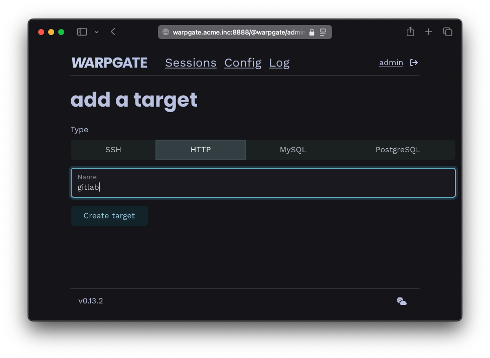
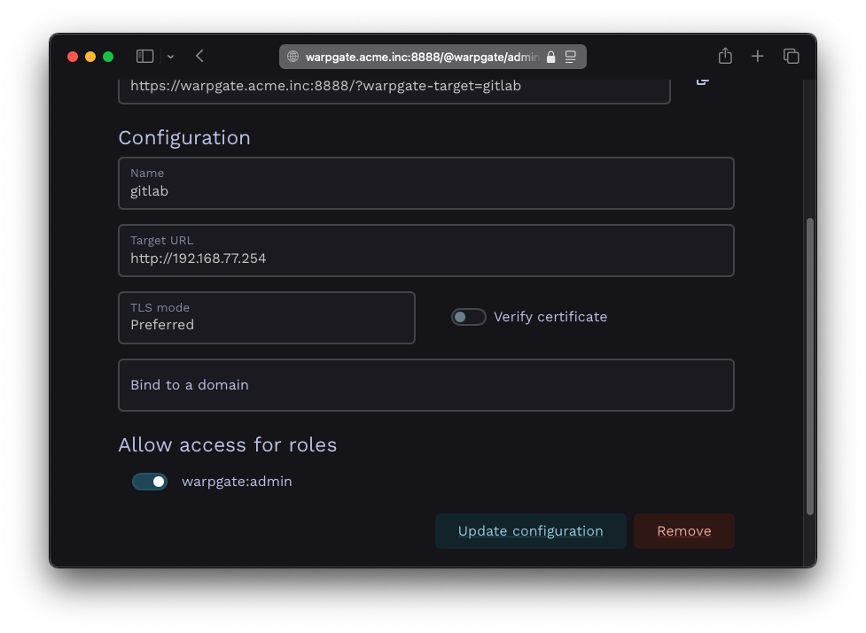
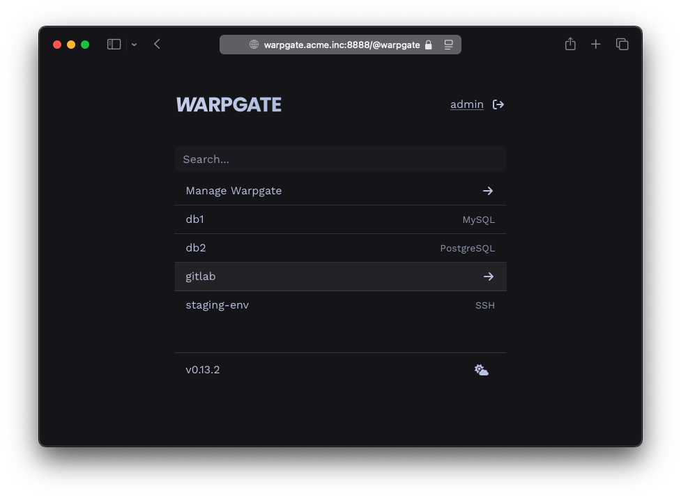
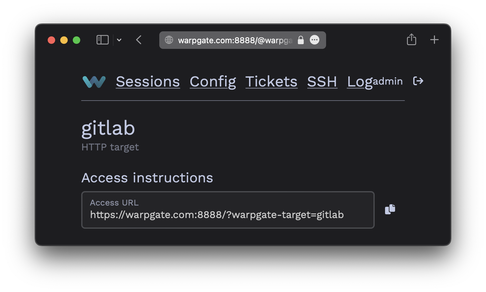
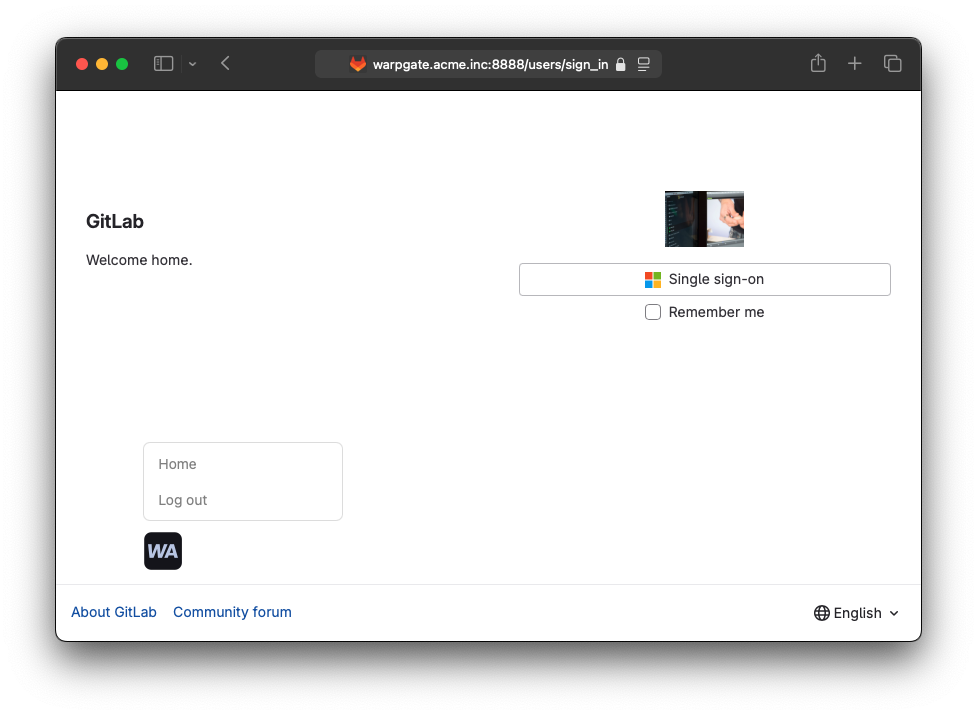

Adding HTTP targets§
Connection setup§
Log into the Warpgate admin UI and navigate to Config > Targets > Add target and give the new HTTP target a name:

Adding an HTTP target
Fill out the configuration:
- Target URL: the destination web service, including the protocol (
http://orhttps://). - TLS mode: whether to ignore, prefer or require TLS (overrides the URL's protocol).
- Verify certificate: whether to reject untrusted certificates.
- Bind to a domain: link this target to a specific sub-domain of the domain Warpgate is on - see HTTP domain binding
Example:

HTTP target configuration
The target should show up on the Warpgate's homepage:

HTTP target on the home page
Accessing the target§
Users can either access the target by selecting it on the Warpgate's homepage, with a direct URL:
https://<warpgate host>:<port>/?warpgate-target=<name>
You can also find a copyable URL in the Targets section of the admin UI:

HTTP connection instructions
While the target is active, Warpgate will pass-through all HTTP traffic in this session straight to it. You can return back to the homepage by manually navigating to /@warpgate, or by using the injected session menu (shown below). The menu button can be dragged around to stay out of the way and will remember its location.

Accessing an HTTP target